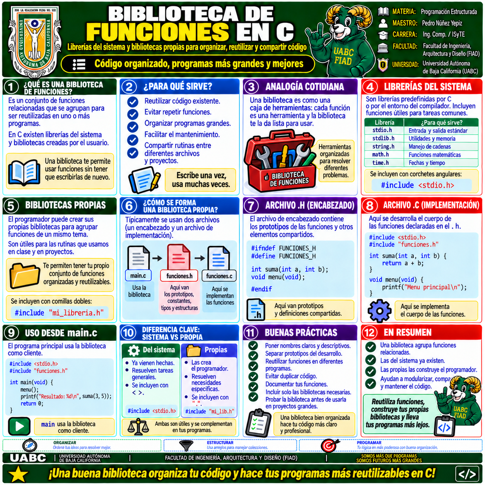
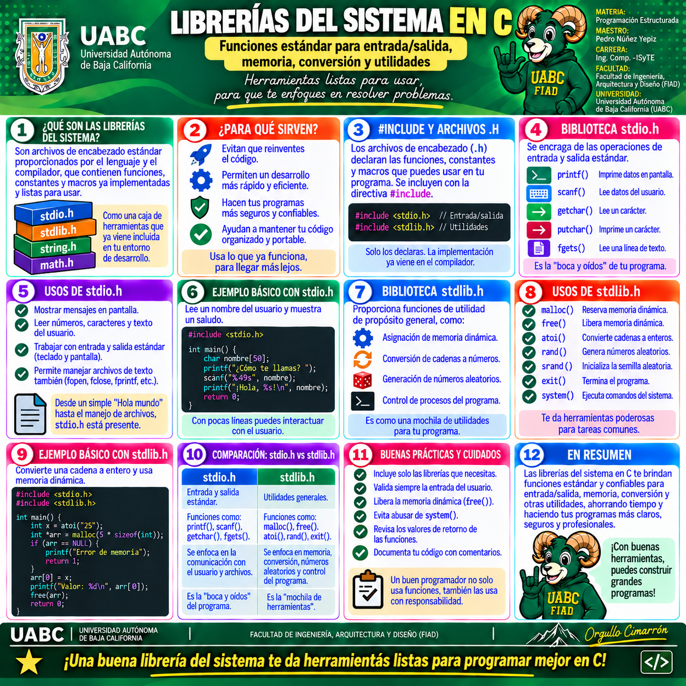
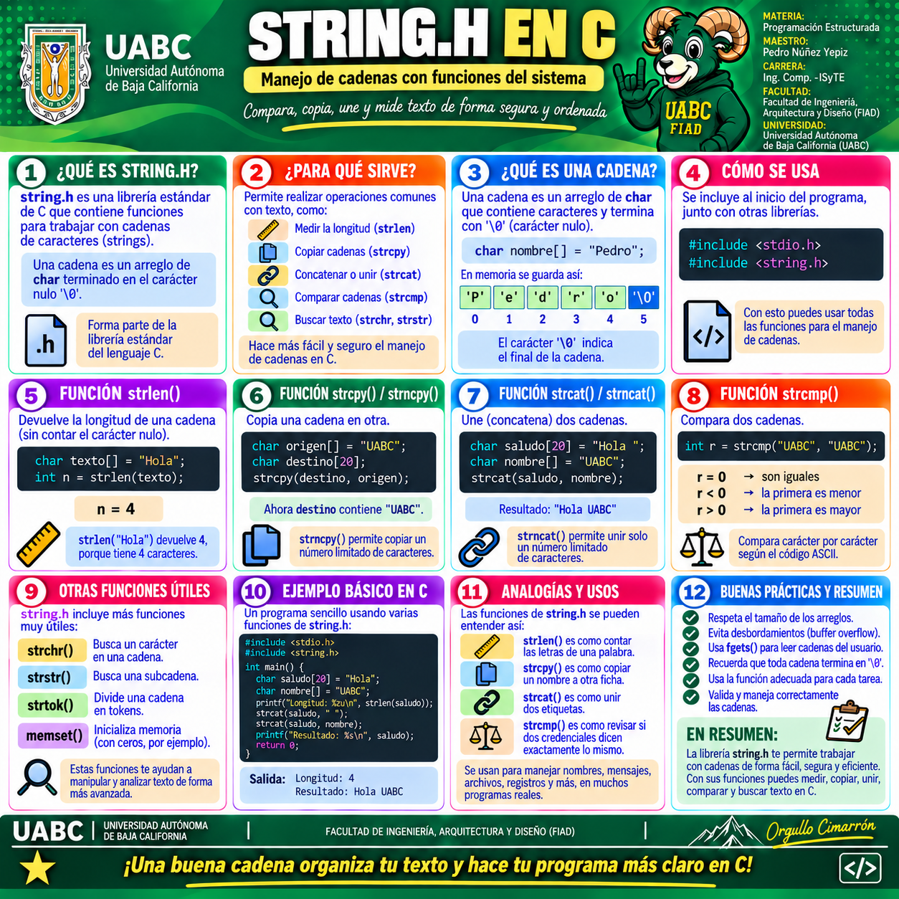
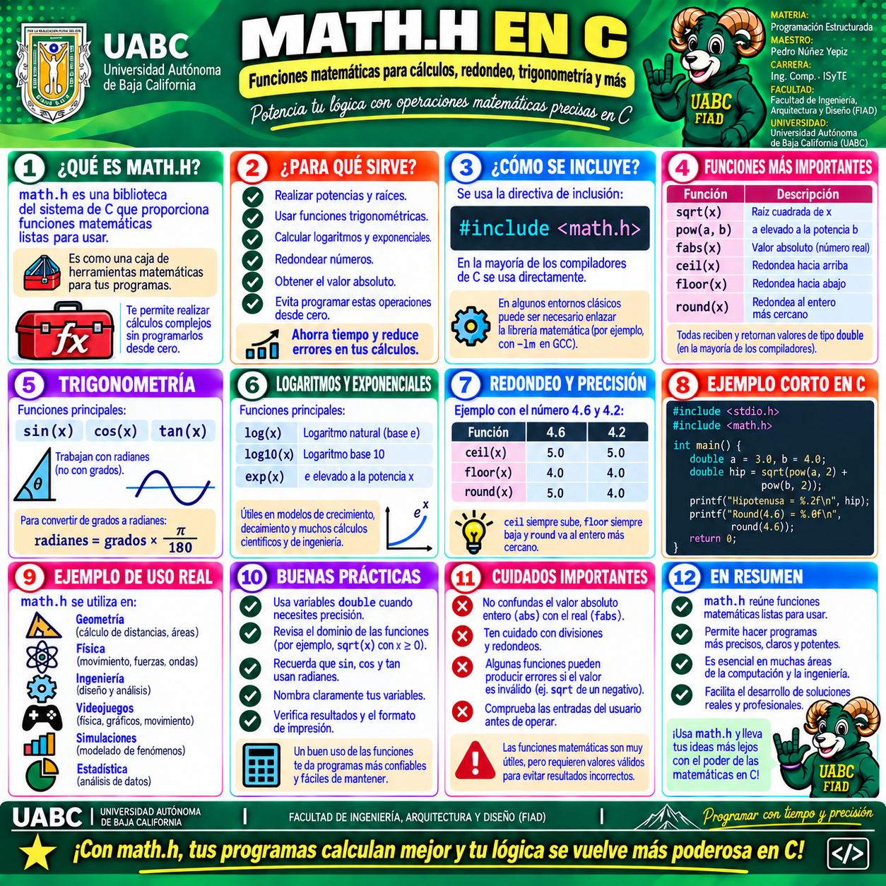
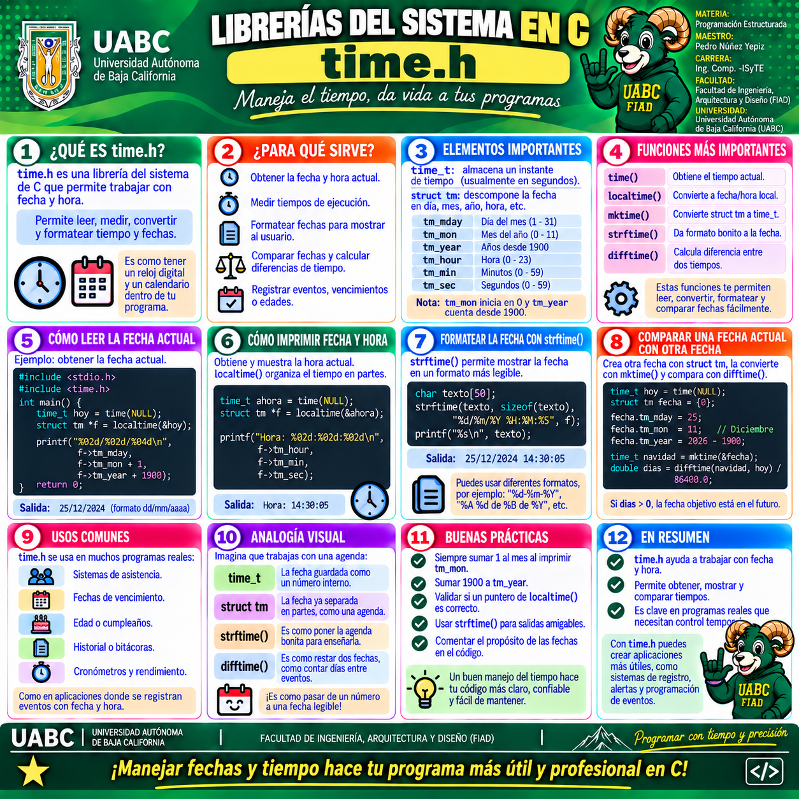
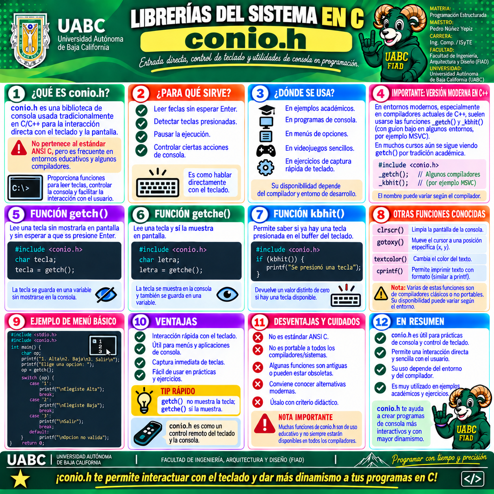
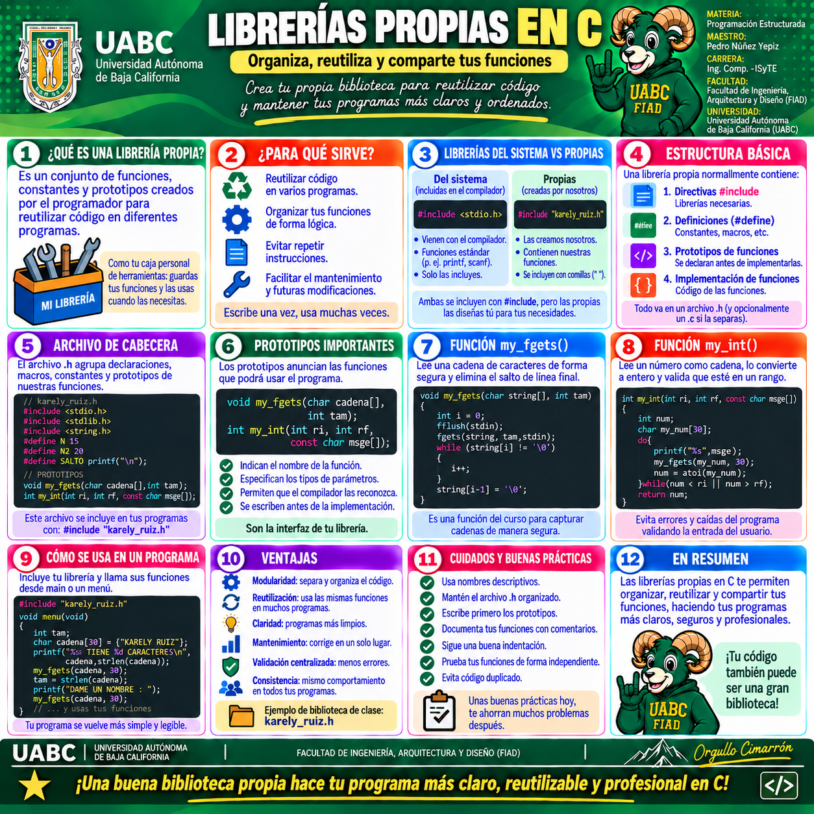

🧩 Galería visual del tema
Estas infografías complementan el estudio de las bibliotecas en C. Comienza con la vista general sobre biblioteca de funciones, continúa con las librerías del sistema y sus casos más comunes, y finaliza con el uso de librerías propias para reutilizar código en tus programas. Haz clic en cualquier imagen para verla a pantalla completa y usar el zoom.

1 · Biblioteca de funciones en C
Presenta qué es una biblioteca, para qué sirve, la diferencia entre
bibliotecas del sistema y propias, la estructura básica con archivo
.h y archivo de implementación, y buenas prácticas.

2 · Librerías del sistema en C
Resume el papel de los archivos de cabecera del sistema, la directiva
#include y el uso de bibliotecas estándar como
stdio.h y stdlib.h.

3 · string.h en C
Explica el manejo de cadenas mediante funciones como
strlen(), strcpy(), strcat(),
strcmp() y otras rutinas útiles.

4 · math.h en C
Muestra funciones matemáticas frecuentes como sqrt(),
pow(), fabs(), ceil(),
floor() y round().

5 · time.h en C
Presenta el manejo de fecha y hora mediante time_t,
struct tm, localtime(), mktime(),
strftime() y difftime().

6 · conio.h en C
Describe una biblioteca de consola tradicional con funciones como
getch(), getche() y kbhit(),
aclarando su uso educativo y sus limitaciones de portabilidad.

7 · Librerías propias en C
Explica cómo crear tus propias bibliotecas para organizar funciones, reutilizar código, declarar prototipos y encapsular rutinas dentro de un archivo de cabecera reutilizable.
Inicia con Biblioteca de funciones en C para comprender el panorama general. Después revisa Librerías del sistema en C y estudia por separado string.h, math.h, time.h y conio.h. Cierra con Librerías propias en C para relacionar el contenido con el diseño de funciones reutilizables y la organización de tus propios archivos.